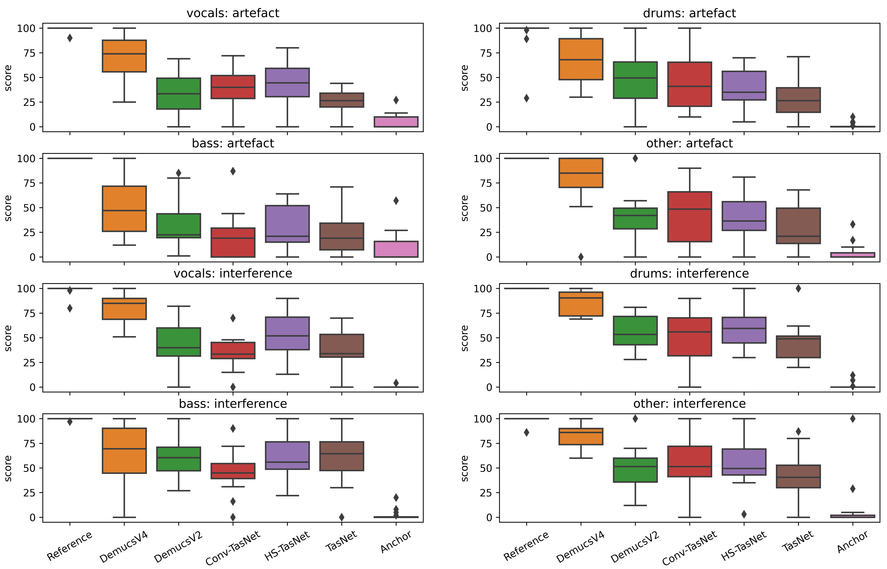

16 participants were asked to rate 8 pages of 7 examples each (5 models, a reference and an anchor) --- 4 pages were focused on quality (timbral fidelity and absence of artefacts) and 4 pages were focused on the rejection of interference from remaining sources.
Below are random audio examples used for the listening test.